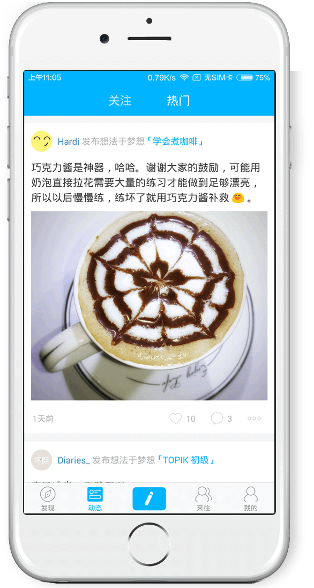
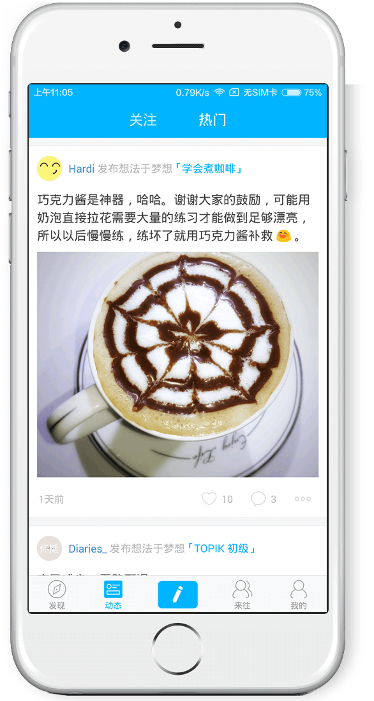

跟志同道合的人一起工作
这里是十年后的团队成员，是一群想为这个世界中创造出一些不同的人。我们来自不同的城市和生活，有的人原来在美国念计算机，有的人原来学药学，有的人原来环游中国旅行，做过地产销售顾问，也有的人毕业之后一直在做管理咨询。
在十年后，我们只关心一件事: 自己所做的事情是否有价值，是否值得未来之人书写。每个人的生命都由无数选择构成，而一起来做这件和梦想有关的事情，是我们最重要的选择之一。We are all dreamers！
十年后，你会成为怎样的人？
十年后是一个基于梦想的经验交流社区。
你可以在时间轴上创建未来自己想要实现的梦想，基于这些梦想你可以：
跟志同道合的人一起工作
这里是十年后的团队成员，是一群想为这个世界中创造出一些不同的人。我们来自不同的城市和生活，有的人原来在美国念计算机，有的人原来学药学，有的人原来环游中国旅行，做过地产销售顾问，也有的人毕业之后一直在做管理咨询。
在十年后，我们只关心一件事: 自己所做的事情是否有价值，是否值得未来之人书写。每个人的生命都由无数选择构成，而一起来做这件和梦想有关的事情，是我们最重要的选择之一。We are all dreamers！
简历投递邮箱


10 - 20K
职位描述:
职位要求:
10 - 20K
职位描述:
职位要求:

8 - 15K
职位描述:
职位要求:
在社交信息越来越发达、越来越爆炸之后，始终有一种声音，认为现有的社交形式和内容对个人的发展没有过多的好处，速食、碎片化信息、未经证实的信息、负面信息等等因素让用户越来越难从社交网路上获得有益的信息。而在这样的背景之下，梦想这件事时常被反复提出，在个人成长、尤其是中国的文化背景下不能抛弃对未来的规划和对梦想的追求。基于这点，一些服务和应用开始从“梦想”“未来”出发，建立新的社交形式，而这样的社交平台能否被大众所接受呢？
“十年后” 是几个复旦毕业生出自切身感受和需求，一同创立的基于梦想的私密社交网络。它要让你放心大胆地思考未来说出你的梦想，并且为之订立不同的短期中长期目标，并和有类似目标的人群一起互相鼓励实现梦想。
“十年后”是一个“做梦”的网站，用户可以在这个网站上分享自己的想法、计划或者资料，制作自己的梦想时间轴。这个网站想做的，就是提醒你不要忘记最初的梦想：十年后，你要成为你想成为的那个人。
“十年后”是一个基于未来时间轴的社交网络，把时间“可视化”，让人们记录和分享关于未来的梦想，并和有趣的人进行交流。其于2014年3月入驻上海顶尖的科技创业孵化器Innospace并得到种子轮融资。今日宣布获得创新谷VC数百万元天使轮融资，资金已全部到账。
在社交信息越来越发达、越来越爆炸之后，始终有一种声音，认为现有的社交形式和内容对个人的发展没有过多的好处，速食、碎片化信息、未经证实的信息、负面信息等等因素让用户越来越难从社交网路上获得有益的信息。而在这样的背景之下，梦想这件事时常被反复提出，在个人成长、尤其是中国的文化背景下不能抛弃对未来的规划和对梦想的追求。基于这点，一些服务和应用开始从“梦想”“未来”出发，建立新的社交形式，而这样的社交平台能否被大众所接受呢？
“十年后” 是几个复旦毕业生出自切身感受和需求，一同创立的基于梦想的私密社交网络。它要让你放心大胆地思考未来说出你的梦想，并且为之订立不同的短期中长期目标，并和有类似目标的人群一起互相鼓励实现梦想。
“十年后”是一个“做梦”的网站，用户可以在这个网站上分享自己的想法、计划或者资料，制作自己的梦想时间轴。这个网站想做的，就是提醒你不要忘记最初的梦想：十年后，你要成为你想成为的那个人。
“十年后”是一个基于未来时间轴的社交网络，把时间“可视化”，让人们记录和分享关于未来的梦想，并和有趣的人进行交流。其于2014年3月入驻上海顶尖的科技创业孵化器Innospace并得到种子轮融资。今日宣布获得创新谷VC数百万元天使轮融资，资金已全部到账。
 
